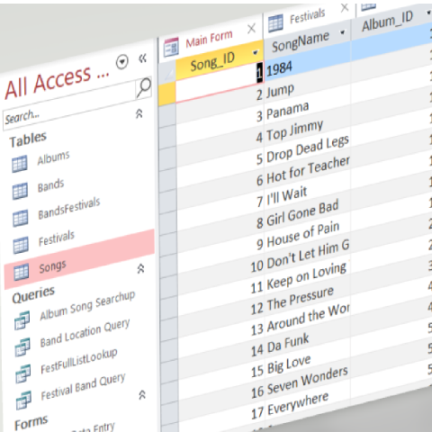

Made in Microsoft Access
This was a Music Festival Project for Database class at the University of Warmia and Mazury. It includes multiple tables, query-based functions, forms, and reports, and was even used for my university's music festival in 2020.

You can easily search up details of a band, song, or festival location through the main form, as well as input your own band to link to a festival, and view a table and edit manually if you so choose. This project received one of the highest scores in the class for going above and beyond what the requirements were.
One of the main issues I had to overcome for this was properly creating a One-to-Many relationship in MS Access when there is no easy way to do directly. This was remedied by the usage of a "linking" table between Bands and Festivals where the Band ID and Festival ID were accesses via this table.
This project is available for download from this Github link.